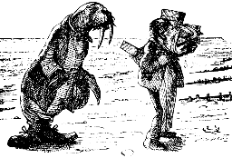

The Walrus and the Carpenter, commiserating about sand.
The sun was shining on the sea,
Shining with all his might:
He did his very best to make
The billows smooth and bright--
And this was odd, because it was
The middle of the night.
The moon was shining sulkily,
Because she thought the sun
Had got no business to be there
After the day was done--
"It's very rude of him," she said,
"To come and spoil the fun!"
The sea was wet as wet could be,
The sands were dry as dry.
You could not see a cloud, because
No cloud was in the sky:
No birds were flying overhead--
There were no birds to fly.
The Walrus and the Carpenter
Were walking close at hand;
They wept like anything to see
Such quantities of sand:
"If this were only cleared away,"
They said, "it would be grand!"
"If seven maids with seven mops
Swept it for half a year.
Do you suppose," the Walrus said,
"That they could get it clear?"
"I doubt it," said the Carpenter,
And shed a bitter tear.
"O Oysters, come and walk with us!"
The Walrus did beseech.
"A pleasant walk, a pleasant talk,
Along the briny beach:
We cannot do with more than four,
To give a hand to each."
The eldest Oyster looked at him,
But never a word he said:
The eldest Oyster winked his eye,
And shook his heavy head--
Meaning to say he did not choose
To leave the oyster-bed.